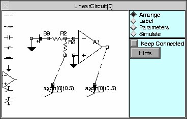

The usage style is to
1) With the "Arrange" tool, place the components of the circuit so they are properly connected.
2) With the "Label" tool, rename components and specify the names of important circuit nodes. Move the labels so they are clearly associated with the proper component/node. Also, cell locations, if any, are specified with the "Label" tool.
3) With the "Parameters" tool, specify values for the components and pulse protocols for any batteries and constant current devices.
4) With the "Simulate" tool, one specifies states (node voltages and/or internal component states) for plotting. The circuit is not added to the neuron equations unless the "Simulate" tool is active.
Each of these tools has a brief "Hints" button which gives basic usage information.
Arranging the voltage clamp parts on the graph panel is done by selecting parts on the left of the scene which are then dragged to their desired position.
Unconnected ends of components are indicated by red circles. When the ends of two components overlap, a connection is implied and that fact is indicated by a small black square. Selecting the center of a component allows positioning. Selecting and dragging an end of a component allows scaling and rotation. An attempt is made to keep the ends of components on implicit grid points. The completed arrangement of parts

gives a fairly understandable circuit topology. However the components are labeled according to component type with indices in the order in which they were created. Those labels are not pleasingly formatted in relation to the components. The default cell connections are not our desired locations. And important voltage nodes of the circuit are unlabeled. All these problems are overcome with the "Label" tool.
It is probably best to start by moving the existing labels to better locations.
When "Change" is selected, clicking on a component label pops up a string input dialog. Clicking on a cell name pops up a location browser.